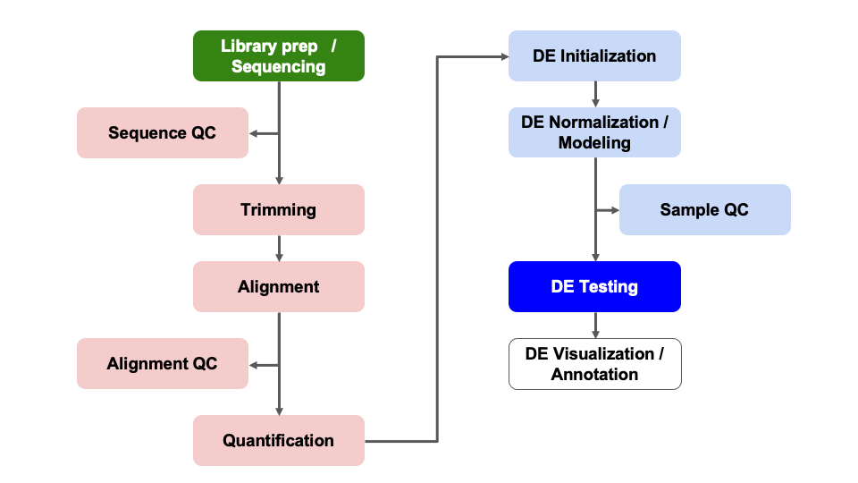
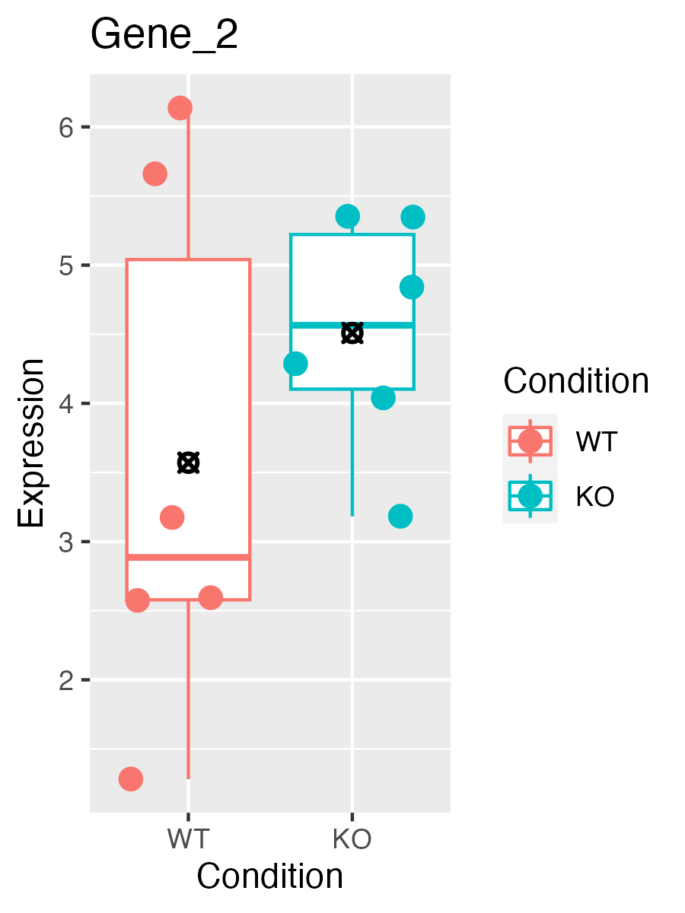

In this module, we will learn:
- How to generate tables of DE statistics
- What a p-value does (and does not!) represent
- The importance multiple hypothesis corrections
Differential Expression Workflow
Now we test for differential expression between our groups of
interest and return a table of results.

Testing for DE
Before showing the code for generating differential expression
results, let’s walk through some toy data and discuss our intuition, its
limitations, and what we can do to formalize our thought around
determining if a gene is differentially expressed.
Let’s start by looking at expression boxplots for a few “genes” where
we’ve made up the data. In each plot, we are comparing the expression
levels (on the y-axis) for samples (each point) representing a WT (red)
and KO (teal) condition. The boxplot shows the 25% - 75% distribution,
along with outliers, with a bar representing the median value, and a
black-crossed-point representing the mean.
For the first example, we ask: Does the KO affect the expression of
the gene?

It seems pretty clear that there is a large difference between the
means of the two groups, and within-group spread is quite low. So the
answer to the question is likely “Yes”.
Consider a second example:

Here there isn’t a large difference between the means of the two
groups, and there is quite a bit of spread within-group. The answer here
is likely “No”.
Finally, consider a third example:

The means are not so close to each other in this example, though
there is still quite a bit of spread. This is example is perhaps less
clear.
Looking at all three of the hypothetical genes together, we see them
in relation to one another and how they span the range from No, to
Maybe?, to Definitely.

Now, consider needing to make this decision for 20,000 genes. Even if
all the genes had clear separation, that would take a lot of time.
However, it’s reasonable to expect to see a lot of genes with more
ambiguous expression like Gene 2.
We need a formal, reproducible, way to make this
decision!
Thankfully statistics provides the formality we want, but for any
statistical test we need to clearly state what we are testing. When
testing for differential expression we assume that for any for any
particular gene, there is no difference in expression between
conditions. Statisticians would call this the “null hypothesis”.
For each gene, DESeq2 computes a “Wald statistic” which is a single
number encapsulating the difference in the means and the spread of the
groups. However, this number alone doesn’t allow us to determine if a
gene is differentially expressed. We need a second
number to give us an idea of how extreme that statistic is among the
distribution of possible statistics, which is the
“p-value”. The “p-value” along with
choosing a threshold will inform us if we can reject the null
hypothesis and classify a gene as differentially expressed.
Imagine shuffling the group labels and recomputing the Wald statistic
over and over again. You’d get a distribution of statistics that would
look similar to a normal curve. The p-value essentially tells you how
likely you are to have seen the statistic by chance. So when we set a
p-value = 0.05 as a threshold, we’re saying, “there is a 5% chance I’d
see something this extreme when there was actually no effect”. So the
evidence is strong, but not
ironclad.
Generating DE Results
We can check what comparisons were automatically generated during
fitting using the resultsNames() function. Note that the
results are stored based on the levels we set in the sample sheet and
that the convention is to always have “case” first versus “control”
second.
resultsNames(dds_fitted)
[1] "Intercept" "condition_deficient_vs_control"
There is only the one comparison in the results, so we will refer to
it in the name parameter of the results()
function, and assign the result as an object.
results_deficient_vs_control = results(dds_fitted, name = 'condition_deficient_vs_control')
head(results_deficient_vs_control)
log2 fold change (MLE): condition deficient vs control
Wald test p-value: condition deficient vs control
DataFrame with 6 rows and 6 columns
baseMean log2FoldChange lfcSE stat
<numeric> <numeric> <numeric> <numeric>
ENSMUSG00000000001 1489.83039 0.297760 0.210310 1.415815
ENSMUSG00000000028 1748.93544 0.226421 0.176795 1.280695
ENSMUSG00000000031 2151.87715 0.457635 0.764579 0.598545
ENSMUSG00000000037 24.91672 0.579130 0.561259 1.031840
ENSMUSG00000000049 7.78377 -0.899483 1.553063 -0.579167
ENSMUSG00000000056 19653.54030 -0.174048 0.203529 -0.855151
pvalue padj
<numeric> <numeric>
ENSMUSG00000000001 0.156830 0.868573
ENSMUSG00000000028 0.200301 0.902900
ENSMUSG00000000031 0.549476 0.995391
ENSMUSG00000000037 0.302147 0.950613
ENSMUSG00000000049 0.562476 0.998043
ENSMUSG00000000056 0.392468 0.982479
If we look at the results table, we see that the row names are gene
identifiers (in this case ENSEMBL IDs because that’s what the GTF we
used in the call to RSEM+STAR) and then we see the following
columns:
baseMean is the average of the normalized count values,
divided by size factors and taken over all samples, and can be
interpreted as the relative expression level of that gene across all
samples.log2FoldChange is the log2 transformed ratio of the
expression of the numerator group (first group) over the denominator
group (second group after “vs”). Note that in our comparison, the
log2FoldChange column compares the expression of
deficient over the denominator group, control.
If the value is positive, that means the expression of that gene is
greater across the deficient samples than across the
control samples. If the value is negative, that means the
expression of that gene is greater across the deficient
samples.lfcSE is the standard error for the log2 fold change
estimate.
Note:
results() defaults
If no arguments are passed to results(), then the log2
fold changes and Wald test p-value will be for the last
variable in the design formula, and if this is a factor, the
comparison will be the last level over the
reference level. If you specify name, as
we did above, then the behavior is given by the name used from
resultsNames().
There are multiple ways to specify the test to be done using the
results() function. It is especially helpful to know this
when fitting more complex models and testing more complex contrasts. To
demonstrate this, consider this description from the help for
results():
contrast: a character vector with exactly three
elements: the name of a factor in the design formula, the name of the
numerator level for the fold change, and the name of the denominator
level for the fold change
So an alternative way to test the same contrast as above
(i.e. deficient / control) is:
alt_results_deficient_vs_control = results(dds_fitted, contrast = c('condition', 'deficient', 'control'))
head(alt_results_deficient_vs_control)
log2 fold change (MLE): condition deficient vs control
Wald test p-value: condition deficient vs control
DataFrame with 6 rows and 6 columns
baseMean log2FoldChange lfcSE stat
<numeric> <numeric> <numeric> <numeric>
ENSMUSG00000000001 1489.83039 0.297760 0.210310 1.415815
ENSMUSG00000000028 1748.93544 0.226421 0.176795 1.280695
ENSMUSG00000000031 2151.87715 0.457635 0.764579 0.598545
ENSMUSG00000000037 24.91672 0.579130 0.561259 1.031840
ENSMUSG00000000049 7.78377 -0.899483 1.553063 -0.579167
ENSMUSG00000000056 19653.54030 -0.174048 0.203529 -0.855151
pvalue padj
<numeric> <numeric>
ENSMUSG00000000001 0.156830 0.868573
ENSMUSG00000000028 0.200301 0.902900
ENSMUSG00000000031 0.549476 0.995391
ENSMUSG00000000037 0.302147 0.950613
ENSMUSG00000000049 0.562476 0.998043
ENSMUSG00000000056 0.392468 0.982479
This way of calling results() is especially helpful when
the levels of the column of interest contain more than two levels
because you can specify exactly which levels to test with little
confusion.
If we continue to look at the results table, after the
lfcSE column we see:
stat is the calculated Wald statistic for that
gene.pvalue is the nominal significance that we
described earlier.padj is the adjusted p-value (also known as a
“q-value”) and is what we use for determining significantly differently
expressed genes.
Question
Why should we use values from padj instead of the
pvalue? Post in the Slack thread.
Multiple hypothesis testing and FDR correction
Each p-value reported in the table is the result of a single test for
a single gene. As stated earlier - with a significance cut-off of
p-value < 0.05, we’re expecting a 5% chance it is a false positive.
However the more genes we test, the greater chance we have of seeing a
significant results by chance.
The multiple hypothesis problem
For example, if we consider running the Wald test for 20 genes
instead of just three, we might see something like this where
Gene N has a p-value below our threshold of 0.05. If we see
this pattern, do we expect that Gene N is actually
differentially expresed (e.g. a true positive)?
What if we tested 100 genes? How many genes would we expect to have
p-values < 0.05, just by chance?

What if we tested 10,000 genes? We would expect to see 500 genes with
p-values < 0.05, just by chance!
So if we are testing 20,000 genes for differential
expression, we would expect to see ~1,000 significant genes (5%) just by
chance.
The FDR solution
To address this multiple
hypothesis correction can be performed. While there are a few
approaches, the default method in DESeq2 is the False Discovery Rate
(FDR) (Benjamini
and Hochberg (1995)).
The default FDR rate cutoff for our analyses is 0.05, meaning the
proportion of false positives amongst our differentially expressed
genes is controlled to 5%. So if we find 500 genes that are
differentially expressed with this FDR cutoff, we expect only 25 of them
to be false positives. DESeq2 vignette’s includes a further
discussion of filtering and multiple testing correction.
Note
on padj values set to NA
As discussed in the HBC
tutorial as well as the DESeq2
vignette, DESeq2 reduces the number of genes that will be tested by
removing genes with low number of counts and outlier samples.
- If within a row, all samples have zero counts, the baseMean column
will be zero, and the log2 fold change estimates, p-value and adjusted
p-value will all be set to NA.
- If a row contains a sample with an extreme count outlier then the
p-value and adjusted p-value will be set to NA. These outlier counts are
detected by Cook’s
distance.
- If a row is filtered by automatic independent filtering, e.g. for
having a low mean normalized count, then only the adjusted p-value will
be set to NA.
Now that we’ve generated our differential comparisons and have an
understanding of our results, including multiple hypothesis correction,
we can proceed with generating summary figures and tables.
Summary
In this section, we:
- Performed statistical tests for comparisons of interest
- Generated tables of differential expression results - i.e. fold
changes and adjusted pvalues for each gene in dataset
- Discussed importance and application of multiple hypothesis
correction
Now that we’ve generated our differential comparisons and have an
understanding of our results, including multiple hypothesis correction,
we can proceed with generating summary figures and tables for our
differential expression analysis.
Sources
These materials have been adapted and extended from materials listed
above. These are open access materials distributed under the terms of
the Creative
Commons Attribution license (CC BY 4.0), which permits unrestricted
use, distribution, and reproduction in any medium, provided the original
author and source are credited.
LS0tCnRpdGxlOiAiREUgVGVzdGluZyIKYXV0aG9yOiAiVU0gQmlvaW5mb3JtYXRpY3MgQ29yZSIKZGF0ZTogImByIFN5cy5EYXRlKClgIgpvdXRwdXQ6CiAgICAgICAgaHRtbF9kb2N1bWVudDoKICAgICAgICAgICAgaW5jbHVkZXM6CiAgICAgICAgICAgICAgICBpbl9oZWFkZXI6IGhlYWRlci5odG1sCiAgICAgICAgICAgIHRoZW1lOiBwYXBlcgogICAgICAgICAgICB0b2M6IHRydWUKICAgICAgICAgICAgdG9jX2RlcHRoOiA0CiAgICAgICAgICAgIHRvY19mbG9hdDogdHJ1ZQogICAgICAgICAgICBudW1iZXJfc2VjdGlvbnM6IGZhbHNlCiAgICAgICAgICAgIGZpZ19jYXB0aW9uOiB0cnVlCiAgICAgICAgICAgIG1hcmtkb3duOiBHRk0KICAgICAgICAgICAgY29kZV9kb3dubG9hZDogdHJ1ZQotLS0KCjxzdHlsZSB0eXBlPSJ0ZXh0L2NzcyI+CmJvZHksIHRkIHsKICAgZm9udC1zaXplOiAxOHB4Owp9CmNvZGUucnsKICBmb250LXNpemU6IDEycHg7Cn0KcHJlIHsKICBmb250LXNpemU6IDEycHgKfQo8L3N0eWxlPgoKYGBge3IsIGluY2x1ZGUgPSBGQUxTRX0Kc291cmNlKCIuLi9iaW4vY2h1bmstb3B0aW9ucy5SIikKa25pdHJfZmlnX3BhdGgoIjEwLSIpCmBgYAoKSW4gdGhpcyBtb2R1bGUsIHdlIHdpbGwgbGVhcm46CgoqIEhvdyB0byBnZW5lcmF0ZSB0YWJsZXMgb2YgREUgc3RhdGlzdGljcwoqIFdoYXQgYSBwLXZhbHVlIGRvZXMgKGFuZCBkb2VzIG5vdCEpIHJlcHJlc2VudAoqIFRoZSBpbXBvcnRhbmNlIG11bHRpcGxlIGh5cG90aGVzaXMgY29ycmVjdGlvbnMKCjxicj4KCmBgYHtyIE1vZHVsZXMsIGV2YWw9VFJVRSwgZWNobz1GQUxTRSwgbWVzc2FnZT1GQUxTRSwgd2FybmluZz1GQUxTRX0KbGlicmFyeShERVNlcTIpCmxpYnJhcnkodGlkeXIpCmxpYnJhcnkoZHBseXIpCiMgbG9hZCgicmRhdGEvUnVubmluZ0RhdGEuUkRhdGEiKQpgYGAKCiMgRGlmZmVyZW50aWFsIEV4cHJlc3Npb24gV29ya2Zsb3cgey51bmxpc3RlZCAudW5udW1iZXJlZH0KCk5vdyB3ZSB0ZXN0IGZvciBkaWZmZXJlbnRpYWwgZXhwcmVzc2lvbiBiZXR3ZWVuIG91ciBncm91cHMgb2YgaW50ZXJlc3QgYW5kIHJldHVybiBhIHRhYmxlIG9mIHJlc3VsdHMuCgohW10oLi9pbWFnZXMvd2F5ZmluZGVyL3dheWZpbmRlci1ERUNvbXBhcmlzb25zLnBuZyl7d2lkdGg9NzUlfQoKLS0tCgojIFRlc3RpbmcgZm9yIERFCgpCZWZvcmUgc2hvd2luZyB0aGUgY29kZSBmb3IgZ2VuZXJhdGluZyBkaWZmZXJlbnRpYWwgZXhwcmVzc2lvbiByZXN1bHRzLCBsZXQncyB3YWxrIHRocm91Z2ggc29tZSB0b3kgZGF0YSBhbmQgZGlzY3VzcyBvdXIgaW50dWl0aW9uLCBpdHMgbGltaXRhdGlvbnMsIGFuZCB3aGF0IHdlIGNhbiBkbyB0byBmb3JtYWxpemUgb3VyIHRob3VnaHQgYXJvdW5kIGRldGVybWluaW5nIGlmIGEgZ2VuZSBpcyBkaWZmZXJlbnRpYWxseSBleHByZXNzZWQuCgpMZXQncyBzdGFydCBieSBsb29raW5nIGF0IGV4cHJlc3Npb24gYm94cGxvdHMgZm9yIGEgZmV3ICJnZW5lcyIgd2hlcmUgd2UndmUgbWFkZSB1cCB0aGUgZGF0YS4gSW4gZWFjaCBwbG90LCB3ZSBhcmUgY29tcGFyaW5nIHRoZSBleHByZXNzaW9uIGxldmVscyAob24gdGhlIHktYXhpcykgZm9yIHNhbXBsZXMgKGVhY2ggcG9pbnQpIHJlcHJlc2VudGluZyBhIFdUIChyZWQpIGFuZCBLTyAodGVhbCkgY29uZGl0aW9uLiBUaGUgYm94cGxvdCBzaG93cyB0aGUgMjUlIC0gNzUlIGRpc3RyaWJ1dGlvbiwgYWxvbmcgd2l0aCBvdXRsaWVycywgd2l0aCBhIGJhciByZXByZXNlbnRpbmcgdGhlIG1lZGlhbiB2YWx1ZSwgYW5kIGEgYmxhY2stY3Jvc3NlZC1wb2ludCByZXByZXNlbnRpbmcgdGhlIG1lYW4uCgpGb3IgdGhlIGZpcnN0IGV4YW1wbGUsIHdlIGFzazogRG9lcyB0aGUgS08gYWZmZWN0IHRoZSBleHByZXNzaW9uIG9mIHRoZSBnZW5lPwoKIVtdKC4vaW1hZ2VzL01vZHVsZTEwX3N0YXRfcGxvdF9HZW5lXzMucG5nKXt3aWR0aD03NSV9CgpJdCBzZWVtcyBwcmV0dHkgY2xlYXIgdGhhdCB0aGVyZSBpcyBhIGxhcmdlIGRpZmZlcmVuY2UgYmV0d2VlbiB0aGUgbWVhbnMgb2YgdGhlIHR3byBncm91cHMsIGFuZCB3aXRoaW4tZ3JvdXAgc3ByZWFkIGlzIHF1aXRlIGxvdy4gU28gdGhlIGFuc3dlciB0byB0aGUgcXVlc3Rpb24gaXMgbGlrZWx5ICJZZXMiLgoKQ29uc2lkZXIgYSBzZWNvbmQgZXhhbXBsZToKCiFbXSguL2ltYWdlcy9Nb2R1bGUxMF9zdGF0X3Bsb3RfR2VuZV8xLnBuZyl7d2lkdGg9NzUlfQoKSGVyZSB0aGVyZSBpc24ndCBhIGxhcmdlIGRpZmZlcmVuY2UgYmV0d2VlbiB0aGUgbWVhbnMgb2YgdGhlIHR3byBncm91cHMsIGFuZCB0aGVyZSBpcyBxdWl0ZSBhIGJpdCBvZiBzcHJlYWQgd2l0aGluLWdyb3VwLiBUaGUgYW5zd2VyIGhlcmUgaXMgbGlrZWx5ICJObyIuCgpGaW5hbGx5LCBjb25zaWRlciBhIHRoaXJkIGV4YW1wbGU6CgohW10oLi9pbWFnZXMvTW9kdWxlMTBfc3RhdF9wbG90X0dlbmVfMi5wbmcpe3dpZHRoPTc1JX0KClRoZSBtZWFucyBhcmUgbm90IHNvIGNsb3NlIHRvIGVhY2ggb3RoZXIgaW4gdGhpcyBleGFtcGxlLCB0aG91Z2ggdGhlcmUgaXMgc3RpbGwgcXVpdGUgYSBiaXQgb2Ygc3ByZWFkLiBUaGlzIGlzIGV4YW1wbGUgaXMgcGVyaGFwcyBsZXNzIGNsZWFyLgoKTG9va2luZyBhdCBhbGwgdGhyZWUgb2YgdGhlIGh5cG90aGV0aWNhbCBnZW5lcyB0b2dldGhlciwgd2Ugc2VlIHRoZW0gaW4gcmVsYXRpb24gdG8gb25lIGFub3RoZXIgYW5kIGhvdyB0aGV5IHNwYW4gdGhlIHJhbmdlIGZyb20gTm8sIHRvIE1heWJlPywgdG8gRGVmaW5pdGVseS4KCiFbXSguL2ltYWdlcy9Nb2R1bGUxMF9zdGF0X3Bsb3QucG5nKQoKTm93LCBjb25zaWRlciBuZWVkaW5nIHRvIG1ha2UgdGhpcyBkZWNpc2lvbiBmb3IgMjAsMDAwIGdlbmVzLiBFdmVuIGlmIGFsbCB0aGUgZ2VuZXMgaGFkIGNsZWFyIHNlcGFyYXRpb24sIHRoYXQgd291bGQgdGFrZSBhIGxvdCBvZiB0aW1lLiBIb3dldmVyLCBpdCdzIHJlYXNvbmFibGUgdG8gZXhwZWN0IHRvIHNlZSBhIGxvdCBvZiBnZW5lcyB3aXRoIG1vcmUgYW1iaWd1b3VzIGV4cHJlc3Npb24gbGlrZSBHZW5lIDIuCgoqKldlIG5lZWQgYSBmb3JtYWwsIHJlcHJvZHVjaWJsZSwgd2F5IHRvIG1ha2UgdGhpcyBkZWNpc2lvbiEqKgoKVGhhbmtmdWxseSBzdGF0aXN0aWNzIHByb3ZpZGVzIHRoZSBmb3JtYWxpdHkgd2Ugd2FudCwgYnV0IGZvciBhbnkgc3RhdGlzdGljYWwgdGVzdCB3ZSBuZWVkIHRvIGNsZWFybHkgc3RhdGUgd2hhdCB3ZSBhcmUgdGVzdGluZy4gIFdoZW4gdGVzdGluZyBmb3IgZGlmZmVyZW50aWFsIGV4cHJlc3Npb24gd2UgYXNzdW1lIHRoYXQgZm9yIGFueSBmb3IgYW55IHBhcnRpY3VsYXIgZ2VuZSwgdGhlcmUgaXMgbm8gZGlmZmVyZW5jZSBpbiBleHByZXNzaW9uIGJldHdlZW4gY29uZGl0aW9ucy4gU3RhdGlzdGljaWFucyB3b3VsZCBjYWxsIHRoaXMgdGhlICJudWxsIGh5cG90aGVzaXMiLgoKRm9yIGVhY2ggZ2VuZSwgREVTZXEyIGNvbXB1dGVzIGEgIldhbGQgc3RhdGlzdGljIiB3aGljaCBpcyBhIHNpbmdsZSBudW1iZXIgZW5jYXBzdWxhdGluZyB0aGUgZGlmZmVyZW5jZSBpbiB0aGUgbWVhbnMgYW5kIHRoZSBzcHJlYWQgb2YgdGhlIGdyb3Vwcy4gSG93ZXZlciwgdGhpcyBudW1iZXIgYWxvbmUgZG9lc24ndCBhbGxvdyB1cyB0byBkZXRlcm1pbmUgaWYgYSBnZW5lIGlzIGRpZmZlcmVudGlhbGx5IGV4cHJlc3NlZC4gV2UgbmVlZCBhICoqc2Vjb25kKiogbnVtYmVyIHRvIGdpdmUgdXMgYW4gaWRlYSBvZiBob3cgZXh0cmVtZSB0aGF0IHN0YXRpc3RpYyBpcyBhbW9uZyB0aGUgZGlzdHJpYnV0aW9uIG9mIHBvc3NpYmxlIHN0YXRpc3RpY3MsIHdoaWNoIGlzIHRoZSAqKiJwLXZhbHVlIioqLiBUaGUgKioicC12YWx1ZSIqKiBhbG9uZyB3aXRoIGNob29zaW5nIGEgdGhyZXNob2xkIHdpbGwgaW5mb3JtIHVzIGlmIHdlIGNhbiAqKnJlamVjdCB0aGUgbnVsbCBoeXBvdGhlc2lzKiogYW5kIGNsYXNzaWZ5IGEgZ2VuZSBhcyBkaWZmZXJlbnRpYWxseSBleHByZXNzZWQuCgpJbWFnaW5lIHNodWZmbGluZyB0aGUgZ3JvdXAgbGFiZWxzIGFuZCByZWNvbXB1dGluZyB0aGUgV2FsZCBzdGF0aXN0aWMgb3ZlciBhbmQgb3ZlciBhZ2Fpbi4gWW91J2QgZ2V0IGEgZGlzdHJpYnV0aW9uIG9mIHN0YXRpc3RpY3MgdGhhdCB3b3VsZCBsb29rIHNpbWlsYXIgdG8gYSBub3JtYWwgY3VydmUuIFRoZSBwLXZhbHVlIGVzc2VudGlhbGx5IHRlbGxzIHlvdSBob3cgbGlrZWx5IHlvdSBhcmUgdG8gaGF2ZSBzZWVuIHRoZSBzdGF0aXN0aWMgYnkgY2hhbmNlLiBTbyB3aGVuIHdlIHNldCBhIHAtdmFsdWUgPSAwLjA1IGFzIGEgdGhyZXNob2xkLCB3ZSdyZSBzYXlpbmcsICJ0aGVyZSBpcyBhIDUlIGNoYW5jZSBJJ2Qgc2VlIHNvbWV0aGluZyB0aGlzIGV4dHJlbWUgd2hlbiB0aGVyZSB3YXMgYWN0dWFsbHkgbm8gZWZmZWN0Ii4gU28gdGhlIGV2aWRlbmNlIGlzICoqc3Ryb25nKiosIGJ1dCBub3QgKippcm9uY2xhZCoqLgoKIyBHZW5lcmF0aW5nIERFIFJlc3VsdHMKCldlIGNhbiBjaGVjayB3aGF0IGNvbXBhcmlzb25zIHdlcmUgYXV0b21hdGljYWxseSBnZW5lcmF0ZWQgZHVyaW5nIGZpdHRpbmcgdXNpbmcgdGhlIGByZXN1bHRzTmFtZXMoKWAgZnVuY3Rpb24uIE5vdGUgdGhhdCAgdGhlIHJlc3VsdHMgYXJlIHN0b3JlZCBiYXNlZCBvbiB0aGUgbGV2ZWxzIHdlIHNldCBpbiB0aGUgc2FtcGxlIHNoZWV0IGFuZCB0aGF0IHRoZSBjb252ZW50aW9uIGlzIHRvIGFsd2F5cyBoYXZlICJjYXNlIiBmaXJzdCB2ZXJzdXMgImNvbnRyb2wiIHNlY29uZC4KYGBge3IgUmVzdWx0czF9CnJlc3VsdHNOYW1lcyhkZHNfZml0dGVkKQpgYGAKClRoZXJlIGlzIG9ubHkgdGhlIG9uZSBjb21wYXJpc29uIGluIHRoZSByZXN1bHRzLCBzbyB3ZSB3aWxsIHJlZmVyIHRvIGl0IGluIHRoZSBgbmFtZWAgcGFyYW1ldGVyIG9mIHRoZSBgcmVzdWx0cygpYCBmdW5jdGlvbiwgYW5kIGFzc2lnbiB0aGUgcmVzdWx0IGFzIGFuIG9iamVjdC4KCmBgYHtyIFNldHNSZXN1bHR9CnJlc3VsdHNfZGVmaWNpZW50X3ZzX2NvbnRyb2wgPSByZXN1bHRzKGRkc19maXR0ZWQsIG5hbWUgPSAnY29uZGl0aW9uX2RlZmljaWVudF92c19jb250cm9sJykKaGVhZChyZXN1bHRzX2RlZmljaWVudF92c19jb250cm9sKQpgYGAKCklmIHdlIGxvb2sgYXQgdGhlIHJlc3VsdHMgdGFibGUsIHdlIHNlZSB0aGF0IHRoZSByb3cgbmFtZXMgYXJlIGdlbmUgaWRlbnRpZmllcnMgKGluIHRoaXMgY2FzZSBFTlNFTUJMIElEcyBiZWNhdXNlIHRoYXQncyB3aGF0IHRoZSBHVEYgd2UgdXNlZCBpbiB0aGUgY2FsbCB0byBSU0VNK1NUQVIpIGFuZCB0aGVuIHdlIHNlZSB0aGUgZm9sbG93aW5nIGNvbHVtbnM6CgoxLiBgYmFzZU1lYW5gIGlzIHRoZSBhdmVyYWdlIG9mIHRoZSBub3JtYWxpemVkIGNvdW50IHZhbHVlcywgZGl2aWRlZCBieSBzaXplIGZhY3RvcnMgYW5kIHRha2VuIG92ZXIgYWxsIHNhbXBsZXMsIGFuZCBjYW4gYmUgaW50ZXJwcmV0ZWQgYXMgdGhlIHJlbGF0aXZlIGV4cHJlc3Npb24gbGV2ZWwgb2YgdGhhdCBnZW5lIGFjcm9zcyBhbGwgc2FtcGxlcy4KMi4gYGxvZzJGb2xkQ2hhbmdlYCBpcyB0aGUgbG9nMiB0cmFuc2Zvcm1lZCByYXRpbyBvZiB0aGUgZXhwcmVzc2lvbiBvZiB0aGUgbnVtZXJhdG9yIGdyb3VwIChmaXJzdCBncm91cCkgb3ZlciB0aGUgZGVub21pbmF0b3IgZ3JvdXAgKHNlY29uZCBncm91cCBhZnRlciAidnMiKS4gTm90ZSB0aGF0IGluIG91ciBjb21wYXJpc29uLCB0aGUgYGxvZzJGb2xkQ2hhbmdlYCBjb2x1bW4gY29tcGFyZXMgdGhlIGV4cHJlc3Npb24gb2YgYGRlZmljaWVudGAgb3ZlciB0aGUgZGVub21pbmF0b3IgZ3JvdXAsIGBjb250cm9sYC4gSWYgdGhlIHZhbHVlIGlzIHBvc2l0aXZlLCB0aGF0IG1lYW5zIHRoZSBleHByZXNzaW9uIG9mIHRoYXQgZ2VuZSBpcyBncmVhdGVyIGFjcm9zcyB0aGUgYGRlZmljaWVudGAgc2FtcGxlcyB0aGFuIGFjcm9zcyB0aGUgYGNvbnRyb2xgIHNhbXBsZXMuIElmIHRoZSB2YWx1ZSBpcyBuZWdhdGl2ZSwgdGhhdCBtZWFucyB0aGUgZXhwcmVzc2lvbiBvZiB0aGF0IGdlbmUgaXMgZ3JlYXRlciBhY3Jvc3MgdGhlIGBkZWZpY2llbnRgIHNhbXBsZXMuCjMuIGBsZmNTRWAgaXMgdGhlIHN0YW5kYXJkIGVycm9yIGZvciB0aGUgbG9nMiBmb2xkIGNoYW5nZSBlc3RpbWF0ZS4KCj4gIyBOb3RlOiBgcmVzdWx0cygpYCBkZWZhdWx0cyB7LnVubGlzdGVkIC51bm51bWJlcmVkfQo+IElmIG5vIGFyZ3VtZW50cyBhcmUgcGFzc2VkIHRvIGByZXN1bHRzKClgLCB0aGVuIHRoZSBsb2cyIGZvbGQgY2hhbmdlcyBhbmQgV2FsZCB0ZXN0IHAtdmFsdWUgd2lsbCBiZSBmb3IgdGhlICoqbGFzdCB2YXJpYWJsZSoqIGluIHRoZSBkZXNpZ24gZm9ybXVsYSwgYW5kIGlmIHRoaXMgaXMgYSBmYWN0b3IsIHRoZSBjb21wYXJpc29uIHdpbGwgYmUgdGhlICoqbGFzdCBsZXZlbCoqIG92ZXIgdGhlICoqcmVmZXJlbmNlIGxldmVsKiouIElmIHlvdSBzcGVjaWZ5IGBuYW1lYCwgYXMgd2UgZGlkIGFib3ZlLCB0aGVuIHRoZSBiZWhhdmlvciBpcyBnaXZlbiBieSB0aGUgbmFtZSB1c2VkIGZyb20gYHJlc3VsdHNOYW1lcygpYC4KClRoZXJlIGFyZSBtdWx0aXBsZSB3YXlzIHRvIHNwZWNpZnkgdGhlIHRlc3QgdG8gYmUgZG9uZSB1c2luZyB0aGUgYHJlc3VsdHMoKWAgZnVuY3Rpb24uIEl0IGlzIGVzcGVjaWFsbHkgaGVscGZ1bCB0byBrbm93IHRoaXMgd2hlbiBmaXR0aW5nIG1vcmUgY29tcGxleCBtb2RlbHMgYW5kIHRlc3RpbmcgbW9yZSBjb21wbGV4IGNvbnRyYXN0cy4gVG8gZGVtb25zdHJhdGUgdGhpcywgY29uc2lkZXIgdGhpcyBkZXNjcmlwdGlvbiBmcm9tIHRoZSBoZWxwIGZvciBgcmVzdWx0cygpYDoKCj4gYGNvbnRyYXN0YDogYSBjaGFyYWN0ZXIgdmVjdG9yIHdpdGggZXhhY3RseSB0aHJlZSBlbGVtZW50czogdGhlIG5hbWUgb2YgYSBmYWN0b3IgaW4gdGhlIGRlc2lnbiBmb3JtdWxhLCB0aGUgbmFtZSBvZiB0aGUgbnVtZXJhdG9yIGxldmVsIGZvciB0aGUgZm9sZCBjaGFuZ2UsIGFuZCB0aGUgbmFtZSBvZiB0aGUgZGVub21pbmF0b3IgbGV2ZWwgZm9yIHRoZSBmb2xkIGNoYW5nZQoKU28gYW4gYWx0ZXJuYXRpdmUgd2F5IHRvIHRlc3QgdGhlIHNhbWUgY29udHJhc3QgYXMgYWJvdmUgKGkuZS4gIGBkZWZpY2llbnRgIC8gYGNvbnRyb2xgKSBpczoKCmBgYHtyIFNldHNSZXN1bHRzQWx0fQphbHRfcmVzdWx0c19kZWZpY2llbnRfdnNfY29udHJvbCA9IHJlc3VsdHMoZGRzX2ZpdHRlZCwgY29udHJhc3QgPSBjKCdjb25kaXRpb24nLCAnZGVmaWNpZW50JywgJ2NvbnRyb2wnKSkKaGVhZChhbHRfcmVzdWx0c19kZWZpY2llbnRfdnNfY29udHJvbCkKYGBgCgpUaGlzIHdheSBvZiBjYWxsaW5nIGByZXN1bHRzKClgIGlzIGVzcGVjaWFsbHkgaGVscGZ1bCB3aGVuIHRoZSBsZXZlbHMgb2YgdGhlIGNvbHVtbiBvZiBpbnRlcmVzdCBjb250YWluIG1vcmUgdGhhbiB0d28gbGV2ZWxzIGJlY2F1c2UgeW91IGNhbiBzcGVjaWZ5IGV4YWN0bHkgd2hpY2ggbGV2ZWxzIHRvIHRlc3Qgd2l0aCBsaXR0bGUgY29uZnVzaW9uLgoKSWYgd2UgY29udGludWUgdG8gbG9vayBhdCB0aGUgcmVzdWx0cyB0YWJsZSwgYWZ0ZXIgdGhlIGBsZmNTRWAgY29sdW1uIHdlIHNlZToKCjQuIGBzdGF0YCBpcyB0aGUgY2FsY3VsYXRlZCBXYWxkIHN0YXRpc3RpYyBmb3IgdGhhdCBnZW5lLgo1LiBgcHZhbHVlYCBpcyB0aGUgKm5vbWluYWwqIHNpZ25pZmljYW5jZSB0aGF0IHdlIGRlc2NyaWJlZCBlYXJsaWVyLgo2LiBgcGFkamAgaXMgdGhlICphZGp1c3RlZCBwLXZhbHVlKiAoYWxzbyBrbm93biBhcyBhICJxLXZhbHVlIikgYW5kIGlzIHdoYXQgd2UgdXNlIGZvciBkZXRlcm1pbmluZyBzaWduaWZpY2FudGx5IGRpZmZlcmVudGx5IGV4cHJlc3NlZCBnZW5lcy4KCgo+ICMgUXVlc3Rpb24gey51bmxpc3RlZCAudW5udW1iZXJlZH0KPiBXaHkgc2hvdWxkIHdlIHVzZSB2YWx1ZXMgZnJvbSBgcGFkamAgaW5zdGVhZCBvZiB0aGUgYHB2YWx1ZWA/IFBvc3QgaW4gdGhlIFNsYWNrIHRocmVhZC4KCjxicj4KCiMjIyBNdWx0aXBsZSBoeXBvdGhlc2lzIHRlc3RpbmcgYW5kIEZEUiBjb3JyZWN0aW9uCgoKRWFjaCBwLXZhbHVlIHJlcG9ydGVkIGluIHRoZSB0YWJsZSBpcyB0aGUgcmVzdWx0IG9mIGEgc2luZ2xlIHRlc3QgZm9yIGEgc2luZ2xlIGdlbmUuIEFzIHN0YXRlZCBlYXJsaWVyIC0gd2l0aCBhIHNpZ25pZmljYW5jZSBjdXQtb2ZmIG9mIHAtdmFsdWUgPCAwLjA1LCB3ZSdyZSBleHBlY3RpbmcgYSA1JSBjaGFuY2UgaXQgaXMgYSBmYWxzZSBwb3NpdGl2ZS4gSG93ZXZlciB0aGUgbW9yZSBnZW5lcyB3ZSB0ZXN0LCB0aGUgZ3JlYXRlciBjaGFuY2Ugd2UgaGF2ZSBvZiBzZWVpbmcgYSBzaWduaWZpY2FudCByZXN1bHRzIGJ5IGNoYW5jZS4gCgojIyMjIFRoZSBtdWx0aXBsZSBoeXBvdGhlc2lzIHByb2JsZW0KCkZvciBleGFtcGxlLCBpZiB3ZSBjb25zaWRlciBydW5uaW5nIHRoZSBXYWxkIHRlc3QgZm9yIDIwIGdlbmVzIGluc3RlYWQgb2YganVzdCB0aHJlZSwgd2UgbWlnaHQgc2VlIHNvbWV0aGluZyBsaWtlIHRoaXMgd2hlcmUgYEdlbmUgTmAgaGFzIGEgcC12YWx1ZSBiZWxvdyBvdXIgdGhyZXNob2xkIG9mIDAuMDUuIElmIHdlIHNlZSB0aGlzIHBhdHRlcm4sIGRvIHdlIGV4cGVjdCB0aGF0IGBHZW5lIE5gIGlzIGFjdHVhbGx5IGRpZmZlcmVudGlhbGx5IGV4cHJlc2VkIChlLmcuIGEgdHJ1ZSBwb3NpdGl2ZSk/Cgo8YnI+CiFbXSguL2ltYWdlcy9GRFItMS5wbmcpe3dpZHRoPTc1JX0KPGJyPgoKV2hhdCBpZiB3ZSB0ZXN0ZWQgMTAwIGdlbmVzPyBIb3cgbWFueSBnZW5lcyB3b3VsZCB3ZSBleHBlY3QgdG8gaGF2ZSBwLXZhbHVlcyA8IDAuMDUsIGp1c3QgYnkgY2hhbmNlPwoKPGJyPgohW10oLi9pbWFnZXMvRkRSLTIucG5nKXt3aWR0aD03NSV9Cjxicj4KCldoYXQgaWYgd2UgdGVzdGVkIDEwLDAwMCBnZW5lcz8gV2Ugd291bGQgZXhwZWN0IHRvIHNlZSA1MDAgZ2VuZXMgd2l0aCBwLXZhbHVlcyA8IDAuMDUsIGp1c3QgYnkgY2hhbmNlIQoKPGJyPgohW10oLi9pbWFnZXMvRkRSLTMucG5nKXt3aWR0aD03NSV9Cjxicj4KCioqU28gaWYgd2UgYXJlIHRlc3RpbmcgMjAsMDAwIGdlbmVzIGZvciBkaWZmZXJlbnRpYWwgZXhwcmVzc2lvbiwgd2Ugd291bGQgZXhwZWN0IHRvIHNlZSB+MSwwMDAgc2lnbmlmaWNhbnQgZ2VuZXMgKDUlKSBqdXN0IGJ5IGNoYW5jZS4qKgo8YnI+CgojIyMjIFRoZSBGRFIgc29sdXRpb24KClRvIGFkZHJlc3MgdGhpcyBbbXVsdGlwbGUgaHlwb3RoZXNpcyBjb3JyZWN0aW9uXShodHRwczovL211bHRpdGhyZWFkZWQuc3RpdGNoZml4LmNvbS9ibG9nLzIwMTUvMTAvMTUvbXVsdGlwbGUtaHlwb3RoZXNpcy10ZXN0aW5nLykgY2FuIGJlIHBlcmZvcm1lZC4gV2hpbGUgdGhlcmUgYXJlIGEgZmV3IGFwcHJvYWNoZXMsIHRoZSBkZWZhdWx0IG1ldGhvZCBpbiBERVNlcTIgaXMgdGhlIEZhbHNlIERpc2NvdmVyeSBSYXRlIChGRFIpIChbQmVuamFtaW5pIGFuZCBIb2NoYmVyZyAoMTk5NSldKGh0dHBzOi8vcnNzLm9ubGluZWxpYnJhcnkud2lsZXkuY29tL2RvaS8xMC4xMTExL2ouMjUxNy02MTYxLjE5OTUudGIwMjAzMS54KSkuCgpUaGUgZGVmYXVsdCBGRFIgcmF0ZSBjdXRvZmYgZm9yIG91ciBhbmFseXNlcyBpcyAwLjA1LCBtZWFuaW5nIHRoZSBwcm9wb3J0aW9uIG9mIGZhbHNlIHBvc2l0aXZlcyBhbW9uZ3N0IG91ciAqZGlmZmVyZW50aWFsbHkgZXhwcmVzc2VkIGdlbmVzKiBpcyBjb250cm9sbGVkIHRvIDUlLiBTbyBpZiB3ZSBmaW5kIDUwMCBnZW5lcyB0aGF0IGFyZSBkaWZmZXJlbnRpYWxseSBleHByZXNzZWQgd2l0aCB0aGlzIEZEUiBjdXRvZmYsIHdlIGV4cGVjdCBvbmx5IDI1IG9mIHRoZW0gdG8gYmUgZmFsc2UgcG9zaXRpdmVzLiBERVNlcTIgdmlnbmV0dGUncyBpbmNsdWRlcyBhIFtmdXJ0aGVyIGRpc2N1c3Npb24gb2YgZmlsdGVyaW5nIGFuZCBtdWx0aXBsZSB0ZXN0aW5nIGNvcnJlY3Rpb25dKGh0dHA6Ly9iaW9jb25kdWN0b3Iub3JnL3BhY2thZ2VzL2RldmVsL2Jpb2MvdmlnbmV0dGVzL0RFU2VxMi9pbnN0L2RvYy9ERVNlcTIuaHRtbCNpbmRlcGVuZGVudC1maWx0ZXJpbmctYW5kLW11bHRpcGxlLXRlc3RpbmcpLgoKPiAjIE5vdGUgb24gYHBhZGpgIHZhbHVlcyBzZXQgdG8gTkEgey51bmxpc3RlZCAudW5udW1iZXJlZH0KPgo+IEFzIGRpc2N1c3NlZCBpbiB0aGUgW0hCQyB0dXRvcmlhbF0oaHR0cHM6Ly9oYmN0cmFpbmluZy5naXRodWIuaW8vREdFX3dvcmtzaG9wL2xlc3NvbnMvMDVfREdFX0RFU2VxMl9hbmFseXNpczIuaHRtbCkgYXMgd2VsbCBhcyB0aGUgW0RFU2VxMiB2aWduZXR0ZV0oaHR0cDovL2Jpb2NvbmR1Y3Rvci5vcmcvcGFja2FnZXMvZGV2ZWwvYmlvYy92aWduZXR0ZXMvREVTZXEyL2luc3QvZG9jL0RFU2VxMi5odG1sI2ktd2FudC10by1iZW5jaG1hcmstZGVzZXEyLWNvbXBhcmluZy10by1vdGhlci1kZS10b29scy4pLCBERVNlcTIgcmVkdWNlcyB0aGUgbnVtYmVyIG9mIGdlbmVzIHRoYXQgd2lsbCBiZSB0ZXN0ZWQgYnkgcmVtb3ZpbmcgZ2VuZXMgd2l0aCBsb3cgbnVtYmVyIG9mIGNvdW50cyBhbmQgb3V0bGllciBzYW1wbGVzLgo+Cj4gKiBJZiB3aXRoaW4gYSByb3csIGFsbCBzYW1wbGVzIGhhdmUgemVybyBjb3VudHMsIHRoZSBiYXNlTWVhbiBjb2x1bW4gd2lsbCBiZSB6ZXJvLCBhbmQgdGhlIGxvZzIgZm9sZCBjaGFuZ2UgZXN0aW1hdGVzLCBwLXZhbHVlIGFuZCBhZGp1c3RlZCBwLXZhbHVlIHdpbGwgYWxsIGJlIHNldCB0byBOQS4KPiAqIElmIGEgcm93IGNvbnRhaW5zIGEgc2FtcGxlIHdpdGggYW4gZXh0cmVtZSBjb3VudCBvdXRsaWVyIHRoZW4gdGhlIHAtdmFsdWUgYW5kIGFkanVzdGVkIHAtdmFsdWUgd2lsbCBiZSBzZXQgdG8gTkEuIFRoZXNlIG91dGxpZXIgY291bnRzIGFyZSBkZXRlY3RlZCBieSBbQ29va+KAmXMgZGlzdGFuY2VdKGh0dHBzOi8vZW4ud2lraXBlZGlhLm9yZy93aWtpL0Nvb2slMjdzX2Rpc3RhbmNlKS4KPiAqIElmIGEgcm93IGlzIGZpbHRlcmVkIGJ5IGF1dG9tYXRpYyBpbmRlcGVuZGVudCBmaWx0ZXJpbmcsIGUuZy4gZm9yIGhhdmluZyBhIGxvdyBtZWFuIG5vcm1hbGl6ZWQgY291bnQsIHRoZW4gb25seSB0aGUgYWRqdXN0ZWQgcC12YWx1ZSB3aWxsIGJlIHNldCB0byBOQS4KCk5vdyB0aGF0IHdlJ3ZlIGdlbmVyYXRlZCBvdXIgZGlmZmVyZW50aWFsIGNvbXBhcmlzb25zIGFuZCBoYXZlIGFuIHVuZGVyc3RhbmRpbmcgb2Ygb3VyIHJlc3VsdHMsIGluY2x1ZGluZyBtdWx0aXBsZSBoeXBvdGhlc2lzIGNvcnJlY3Rpb24sIHdlIGNhbiBwcm9jZWVkIHdpdGggZ2VuZXJhdGluZyBzdW1tYXJ5IGZpZ3VyZXMgYW5kIHRhYmxlcy4KCi0tLQoKIyBTdW1tYXJ5CgpJbiB0aGlzIHNlY3Rpb24sIHdlOgoKKiBQZXJmb3JtZWQgc3RhdGlzdGljYWwgdGVzdHMgZm9yIGNvbXBhcmlzb25zIG9mIGludGVyZXN0CiogR2VuZXJhdGVkIHRhYmxlcyBvZiBkaWZmZXJlbnRpYWwgZXhwcmVzc2lvbiByZXN1bHRzIC0gaS5lLiBmb2xkIGNoYW5nZXMgYW5kIGFkanVzdGVkIHB2YWx1ZXMgZm9yIGVhY2ggZ2VuZSBpbiBkYXRhc2V0CiogRGlzY3Vzc2VkIGltcG9ydGFuY2UgYW5kIGFwcGxpY2F0aW9uIG9mIG11bHRpcGxlIGh5cG90aGVzaXMgY29ycmVjdGlvbgoKTm93IHRoYXQgd2UndmUgZ2VuZXJhdGVkIG91ciBkaWZmZXJlbnRpYWwgY29tcGFyaXNvbnMgYW5kIGhhdmUgYW4gdW5kZXJzdGFuZGluZyBvZiBvdXIgcmVzdWx0cywgaW5jbHVkaW5nIG11bHRpcGxlIGh5cG90aGVzaXMgY29ycmVjdGlvbiwgd2UgY2FuIHByb2NlZWQgd2l0aCBnZW5lcmF0aW5nIHN1bW1hcnkgZmlndXJlcyBhbmQgdGFibGVzIGZvciBvdXIgZGlmZmVyZW50aWFsIGV4cHJlc3Npb24gYW5hbHlzaXMuCgotLS0KCiMgU291cmNlcwoKKiBIQkMgREdFIHRyYWluaW5nIG1vZHVsZSwgcGFydCAxOiBodHRwczovL2hiY3RyYWluaW5nLmdpdGh1Yi5pby9ER0Vfd29ya3Nob3AvbGVzc29ucy8wNF9ER0VfREVTZXEyX2FuYWx5c2lzLmh0bWwKKiBIQkMgREdFIHRyYWluaW5nIG1vZHVsZSwgcGFydCAyOiBodHRwczovL2hiY3RyYWluaW5nLmdpdGh1Yi5pby9ER0Vfd29ya3Nob3AvbGVzc29ucy8wNV9ER0VfREVTZXEyX2FuYWx5c2lzMi5odG1sCiogREVTZXEyIHZpZ25ldHRlOiBodHRwOi8vYmlvY29uZHVjdG9yLm9yZy9wYWNrYWdlcy9kZXZlbC9iaW9jL3ZpZ25ldHRlcy9ERVNlcTIvaW5zdC9kb2MvREVTZXEyLmh0bWwjZGlmZmVyZW50aWFsLWV4cHJlc3Npb24tYW5hbHlzaXMKCgoKYGBge3IgV3JpdGVPdXQuUkRhdGEsIGV2YWw9VFJVRSwgZWNobz1GQUxTRSwgbWVzc2FnZT1GQUxTRSwgd2FybmluZz1GQUxTRX0KIyBIaWRkZW4gY29kZSBibG9jayB0byB3cml0ZSBvdXQgZGF0YSBmb3Iga25pdHRpbmcKIyBzYXZlLmltYWdlKGZpbGUgPSAicmRhdGEvUnVubmluZ0RhdGEuUkRhdGEiKQpgYGAKCi0tLQoKVGhlc2UgbWF0ZXJpYWxzIGhhdmUgYmVlbiBhZGFwdGVkIGFuZCBleHRlbmRlZCBmcm9tIG1hdGVyaWFscyBsaXN0ZWQgYWJvdmUuIFRoZXNlIGFyZSBvcGVuIGFjY2VzcyBtYXRlcmlhbHMgZGlzdHJpYnV0ZWQgdW5kZXIgdGhlIHRlcm1zIG9mIHRoZSBbQ3JlYXRpdmUgQ29tbW9ucyBBdHRyaWJ1dGlvbiBsaWNlbnNlIChDQyBCWSA0LjApXShodHRwOi8vY3JlYXRpdmVjb21tb25zLm9yZy9saWNlbnNlcy9ieS80LjAvKSwgd2hpY2ggcGVybWl0cyB1bnJlc3RyaWN0ZWQgdXNlLCBkaXN0cmlidXRpb24sIGFuZCByZXByb2R1Y3Rpb24gaW4gYW55IG1lZGl1bSwgcHJvdmlkZWQgdGhlIG9yaWdpbmFsIGF1dGhvciBhbmQgc291cmNlIGFyZSBjcmVkaXRlZC4KCjxici8+Cjxici8+Cjxoci8+CnwgW1ByZXZpb3VzIGxlc3Nvbl0oTW9kdWxlMDlfU2FtcGxlUUNWaXouaHRtbCkgfCBbVG9wIG9mIHRoaXMgbGVzc29uXSgjdG9wKSB8IFtOZXh0IGxlc3Nvbl0oTW9kdWxlMTFfREVWaXN1YWxpemF0aW9ucy5odG1sKSB8CnwgOi0tLSB8IDotLS0tOiB8IC0tLTogfAo=